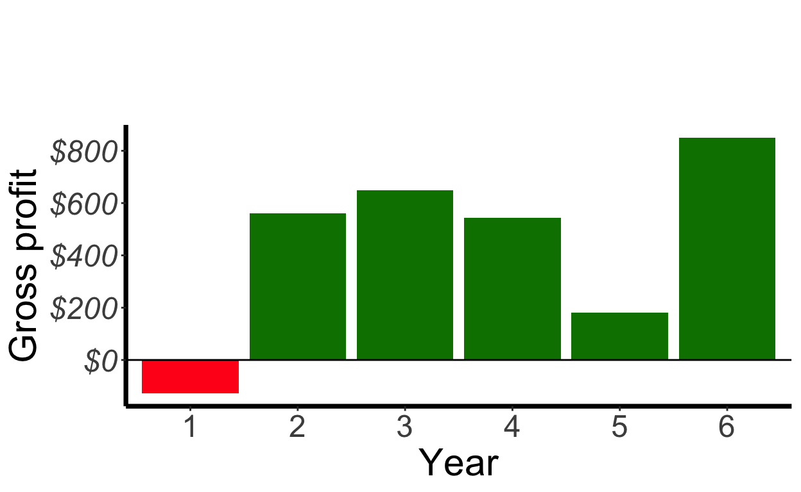
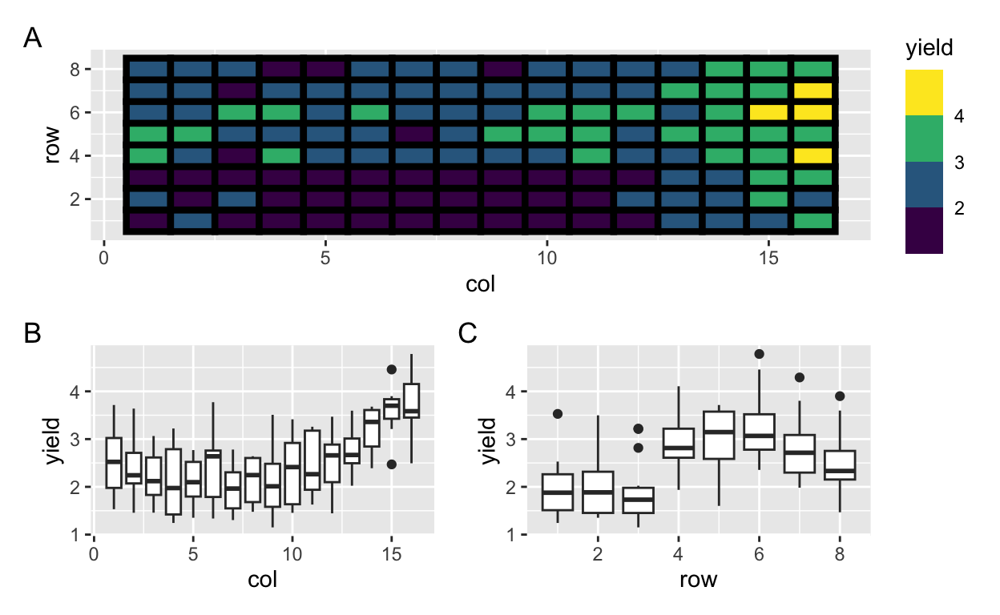
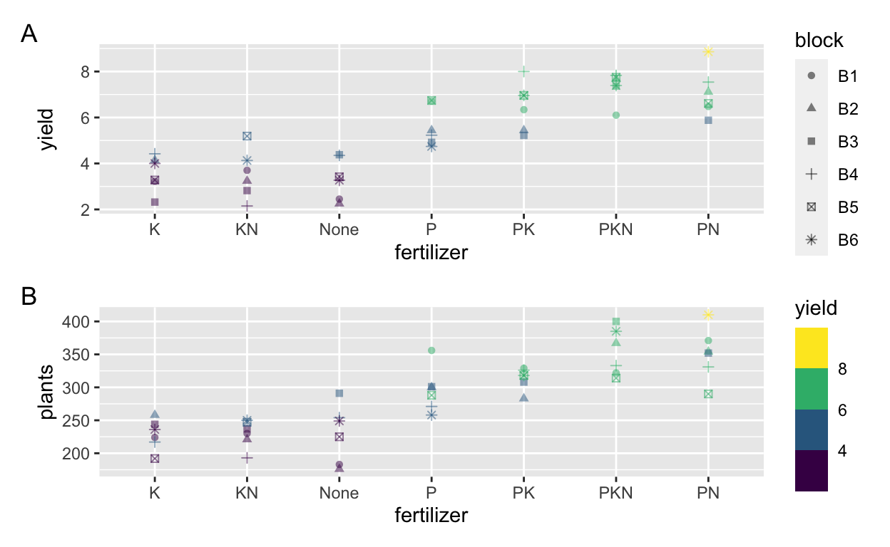

Objective
In this exercise, you will use various datasets in the
agridat package with a focus on modifying the scales and
guide to create the targetted plot.
library(tidyverse) # contains ggplot2
library(agridat)
library(scales)
library(colorspace)Exercise 1
str(nass.cotton)## 'data.frame': 2338 obs. of 4 variables:
## $ year : int 1866 1866 1866 1866 1866 1866 1866 1866 1866 1866 ...
## $ state: Factor w/ 21 levels "Alabama","Arizona",..: 1 3 5 6 10 11 15 17 18 19 ...
## $ acres: num 977000 489000 155000 895000 1020000 ...
## $ yield: int 120 198 123 122 57 86 124 116 102 121 ...

nass.cotton %>%
filter(state=="Florida") %>%
ggplot(aes(___, ___)) +
geom____(aes(color = ___)) +
scale_y____(name = "Yield") +
scale_color_continuous_sequential(palette = "ag_GrnYl",
trans = "log10",
breaks = trans_breaks("log10", function(x) 10^x),
labels = trans_format("log10", math_format(10.^.x))) +
labs(___ = "Year",
___ = "Florida Cotton Yields",
___ = "1900 to 2011",
___ = "Acres") nass.cotton %>%
filter(state=="Florida") %>%
ggplot(aes(year, yield)) +
geom_point(aes(color = acres)) +
scale_y_log10(name = "Yield") +
scale_color_continuous_sequential(palette = "ag_GrnYl",
trans = "log10",
breaks = trans_breaks("log10", function(x) 10^x),
labels = trans_format("log10", math_format(10.^.x))) +
labs(x = "Year",
title = "Florida Cotton Yields",
subtitle = "1900 to 2011",
color = "Acres") Exercise 2
str(burgueno.rowcol)## 'data.frame': 128 obs. of 5 variables:
## $ rep : Factor w/ 2 levels "R1","R2": 1 1 1 1 1 1 1 1 1 1 ...
## $ row : int 1 1 1 1 1 1 1 1 1 1 ...
## $ col : int 1 2 3 4 5 6 7 8 9 10 ...
## $ gen : Factor w/ 64 levels "G01","G02","G03",..: 5 19 55 23 27 38 64 44 14 13 ...
## $ yield: num 1.53 2.22 1.46 1.24 1.9 ...
ggplot(burgueno.rowcol, aes(___, ___)) +
geom_tile(color = "black", size = 1.5, aes(___ = yield)) +
geom____(data = function(.data) filter(.data, gen %in% c("G01", "G02", "G03")),
aes(color = ___, shape = ___),
size = 2) +
labs(___ = "Column",
___ = "Row",
___ = "Yield") +
guides(color = ___(title = "Genotype"),
shape = ___(title = "Genotype"),
___ = guide_colorsteps()) +
coord____() +
scale_____continuous_sequential(palette = "PuBuGn") +
scale_____discrete_qualitative()ggplot(burgueno.rowcol, aes(col, row)) +
geom_tile(color = "black", size = 1.5, aes(fill = yield)) +
geom_point(data = function(.data) filter(.data, gen %in% c("G01", "G02", "G03")),
aes(color = gen, shape = gen),
size = 2) +
labs(x = "Column",
y = "Row",
fill = "Yield") +
guides(color = guide_legend(title = "Genotype"),
shape = guide_legend(title = "Genotype"),
fill = guide_colorsteps()) +
coord_equal() +
scale_fill_continuous_sequential(palette = "PuBuGn") +
scale_color_discrete_qualitative()Exercise 3
str(hazell.vegetables)## 'data.frame': 6 obs. of 5 variables:
## $ year : Factor w/ 6 levels "y1","y2","y3",..: 1 2 3 4 5 6
## $ carrot : int 292 179 114 247 426 259
## $ celery : int -128 560 648 544 182 850
## $ cucumber: int 420 187 366 249 322 159
## $ pepper : int 579 639 379 924 5 569
ggplot(hazell.vegetables, aes(year, celery, fill = celery > 0)) +
geom____() +
geom____(yintercept = 0) +
scale____(labels = dollar) +
labs(___ = "Gross profit",
___ = "Year",
___ = "Celery gross profit over 6 years",
___ = "Profit") +
scale_fill_manual(___ = c("No", "Yes"),
___ = c("#ff1a1a", "#008000")) +
scale_x____(labels = 1:6)nass.cotton %>%
filter(state=="Florida") %>%
ggplot(aes(year, yield)) +
geom_point(aes(color = acres)) +
scale_y_log10(name = "Yield") +
scale_color_continuous_sequential(palette = "ag_GrnYl",
trans = "log10",
breaks = trans_breaks("log10", function(x) 10^x),
labels = trans_format("log10", math_format(10.^.x))) +
labs(x = "Year",
title = "Florida Cotton Yields",
subtitle = "1900 to 2011",
color = "Acres") Exercise 4
str(hanks.sprinkler)## 'data.frame': 108 obs. of 7 variables:
## $ block : Factor w/ 3 levels "B1","B2","B3": 1 1 1 1 1 1 1 1 1 1 ...
## $ row : int 9 9 9 9 9 9 9 9 9 9 ...
## $ subplot: int 1 2 3 4 5 6 7 8 9 10 ...
## $ gen : Factor w/ 3 levels "Bridger","Luke",..: 2 2 2 2 2 2 2 2 2 2 ...
## $ yield : num 2.4 2.7 5.6 7.5 7.9 7.1 6.1 7.3 7.4 6.7 ...
## $ irr : int 1 2 3 4 5 6 6 5 4 3 ...
## $ dir : Factor w/ 2 levels "N","S": 1 1 1 1 1 1 2 2 2 2 ...

ggplot(hanks.sprinkler, aes(factor(row), factor(subplot))) +
___(aes(fill = dir)) +
___(aes(color = factor(irr)), size = 9) +
___(aes(label = block)) +
___(values = c("black", "gray"),
# wrap string longer than 20 characters
name = str_wrap("Direction of sprinkler", 20)) +
scale_color_discrete_qualitative(palette = "Set 3") +
___(x = "Row", y = "Subplot", color = "Irrigation") +
guides(fill = ___(order = 2),
color = ___(order = 1))ggplot(hanks.sprinkler, aes(factor(row), factor(subplot))) +
geom_tile(aes(fill = dir)) +
geom_point(aes(color = factor(irr)), size = 9) +
geom_text(aes(label = block)) +
scale_fill_manual(values = c("black", "gray"),
# wrap string longer than 20 characters
name = str_wrap("Direction of sprinkler", 20)) +
scale_color_discrete_qualitative(palette = "Set 3") +
labs(x = "Row", y = "Subplot", color = "Irrigation") +
guides(fill = guide_legend(order = 2),
color = guide_legend(order = 1))Exercise 5
str(minnesota.barley.weather)## 'data.frame': 719 obs. of 8 variables:
## $ site : Factor w/ 6 levels "Crookston","Duluth",..: 4 4 4 4 4 4 4 4 4 4 ...
## $ year : int 1927 1927 1927 1927 1927 1927 1927 1927 1927 1927 ...
## $ mo : int 1 2 3 4 5 6 7 8 9 10 ...
## $ cdd : int 0 0 0 0 3 126 101 94 142 0 ...
## $ hdd : int 1546 1259 993 586 368 124 37 66 219 443 ...
## $ precip: num 0.78 0.5 2.62 3.26 2.66 1.7 2.73 1.3 2.42 0.81 ...
## $ min : num 3.9 11.3 23.7 34.9 41.4 52.9 54.5 51.3 50.2 37.2 ...
## $ max : num 23 28.6 42.1 55.9 64.9 77.2 79.5 80.4 74.5 64 ...

farenheight_to_celsius <- function(x) return((x - 32) * 5/9)
crookston_barley <- minnesota.barley.weather %>%
mutate(date = as.Date(paste(year, mo, "01", sep = "-")),
minC = farenheight_to_celsius(min),
maxC = farenheight_to_celsius(max)) %>%
filter(site=="Crookston")
ggplot(crookston_barley, aes(x = date)) +
geom____(aes(y = ___), color = "#166ee0") +
geom____(aes(y = ___), color = "#e0161d") +
scale____(___ = "Temperature",
___ = function(x) paste0(x, "°C")) +
scale____(breaks = scales::date_breaks(width = "3 year"),
date_labels = "%Y",
___ = "Time") +
ggtitle("Crookston Monthly Temperature 1927-1936")nass.cotton %>%
filter(state=="Florida") %>%
ggplot(aes(year, yield)) +
geom_point(aes(color = acres)) +
scale_y_log10(name = "Yield") +
scale_color_continuous_sequential(palette = "ag_GrnYl",
trans = "log10",
breaks = trans_breaks("log10", function(x) 10^x),
labels = trans_format("log10", math_format(10.^.x))) +
labs(x = "Year",
title = "Florida Cotton Yields",
subtitle = "1900 to 2011",
color = "Acres")